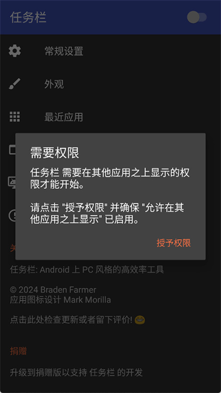

TaskBar 藏得最深的五个冷门玩法——用了两年才发现还能这样
你以为 TaskBar 只是个悬浮任务栏？其实它还能无线 adb、强制桌面模式、让国产 ROM 放开窗口限制。五个官方不提的隐藏功能，帮你把这工具用透。
你以为 TaskBar 就是个悬浮任务栏——把常用 app 固定在屏幕边缘，点一下开小窗？我当初也是这么用的，直到某天花了一晚上翻遍设置和文档，才发现这货藏得真深。
先说它是什么——去官网瞅一眼就知道：Android 上最成熟的自由窗口和桌面模式工具，能把手机变随身电脑。但大部分人只用到了表层的"拖个悬浮栏出来"，下面这五个功能，官方文档藏得比我家遥控器还深。
第一个：无线 adb——一根数据线都不用插
这是我最惊喜的发现。装好 TaskBar（安装包从下载拿）之后，它要的那些系统级权限（WRITE_SECURE_SETTINGS、enable_freeform_support），普通做法是插 USB 线连电脑跑 adb 命令。但如果你不想翻箱倒柜找数据线，其实有个无线的路子。
前提很简单：手机和电脑在同一个 Wi-Fi 下，开发者选项里已经开了 USB 调试。然后电脑端跑：
adb tcpip 5555
adb connect <手机IP>:5555连上之后，TaskBar 弹窗里该给的两条命令照常执行就行，全程无线。用完记得 adb disconnect 关掉连接，安全一些。Android 11+ 甚至支持无线调试直接扫码配对，连 TCP 端口都不用手动敲了。
什么人用得上：没带扩展坞却想临时给平板刷个权限的，或者电脑和设备隔太远插不上线的。什么人可以无视：身边永远有 Type-C 线的，以及嫌无线配对麻烦的。

第二个：强制桌面模式——外接屏再也不只是镜像
接上转接头，外接显示器却只 mirror 手机主屏？大部分人到这就放弃了，以为手机硬件不支持。其实在 TaskBar 设置里翻到桌面模式板块，有两个 adb 命令能直接把系统按在地上摩擦——完整的命令参数和进阶变体可以去TaskBar文档里查：
adb shell settings put global force_desktop_mode_on_external_displays 1
adb shell settings put global enable_freeform_support 1第一条是告诉 Android「接了外接屏一律开桌面模式，别跟我镜像」；第二条是强制所有应用允许自由窗口（连那些声明了"我不支持多窗口"的银行 app 都能掰过来）。两条跑完重启，你会发现外接屏突然变成了带任务栏的桌面界面——那个瞬间真的很惊喜。
注意一个坑：部分国产 ROM（MIUI、ColorOS、OneUI）自己也有桌面模式（DeX、PC 模式、妙享之类的），和 TaskBar 会打架。解决方案是先把厂商那套关掉，再开 TaskBar 的。两边同时开 = 两边都残废。
第三个：自由窗口要生效，最近任务必须清空
这个完全是踩出来的经验坑。勾了自由窗口、adb 也授权了、TaskBar 设置也开了，结果从任务栏点开 app 还是全屏？别再重复跑 adb 了，先看一眼最近任务列表——目标 app 只要在列表里，它就会以全屏方式恢复上次会话，不走 TaskBar 的自由窗口逻辑。
解法很简单：从任务栏点开 app 之前，先把它从最近任务里划掉，确保它处于完全未启动状态，再点一次。这是最容易被忽略的一个生效条件，官方文档提了但没加粗，我至少踩了三次才记住。
第四个：扩展坞带宽不够？降分辨率就好
桌面模式外接 4K 屏时，很多人遇到过黑屏、卡死、窗口拖不动的情况。大部分人的第一反应是"手机太弱带不动 4K"，其实更大可能是转接头或扩展坞的带宽不够。
桌面模式比普通视频输出多了窗口管理、键鼠输入、多应用渲染，对带宽要求高出一截。便宜的 Type-C 转 HDMI 转接头很多只做到 4K@30Hz，跑桌面模式不够用。这时候进 TaskBar 设置或系统设置 → 显示 → 外接显示器，把分辨率降到 1080p，90% 的黑屏和卡死都会消失。
第五个：adb 执行成功但功能还是不工作？重启是万能药
这个听起来像废话，但真的是经验之谈。很多权限（特别是 WRITE_SECURE_SETTINGS）是写入系统属性的，执行成功不代表系统立即生效。我遇到过不下五次：adb 命令跑完返回 Success，TaskBar 里开关也开了，结果小窗还是不出来。
关掉 TaskBar、重启手机，再打开——直接就好。我也不知道为什么 Android 的权限刷新这么懒，但记住这条能省很多排查时间。
最后说一个别踩的坑
Android 13+ 的部分厂商定制版，执行 grantRuntimePermission 会报 java.lang.SecurityException。这不是你命令写错了，是厂商把权限路径改了。换成这条试试：
adb shell appops set com.farmerbb.taskbar WRITE_SECURE_SETTINGS allow基本能解决所有 Android 13 及以上的国产 ROM 权限失败问题。
TaskBar 这类工具，表面看就是个小挂件，但真挖进去能发现 Google 给 Android 留的那些"后门"级设置项，全被它包装成了可用的功能。五个隐藏玩法说穿了就是把 adb 那堆晦涩命令和设置项里的开关，串成了一套能用的工作流。把这些摸透之后，手机接显示器当电脑用这件事，就不是"能不能"的问题，而是"要不要"的问题了。